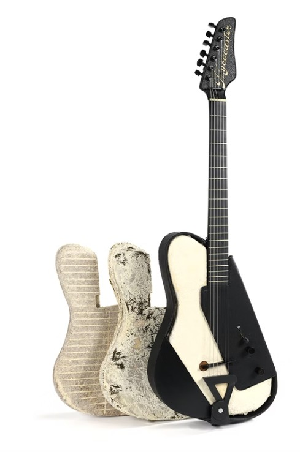
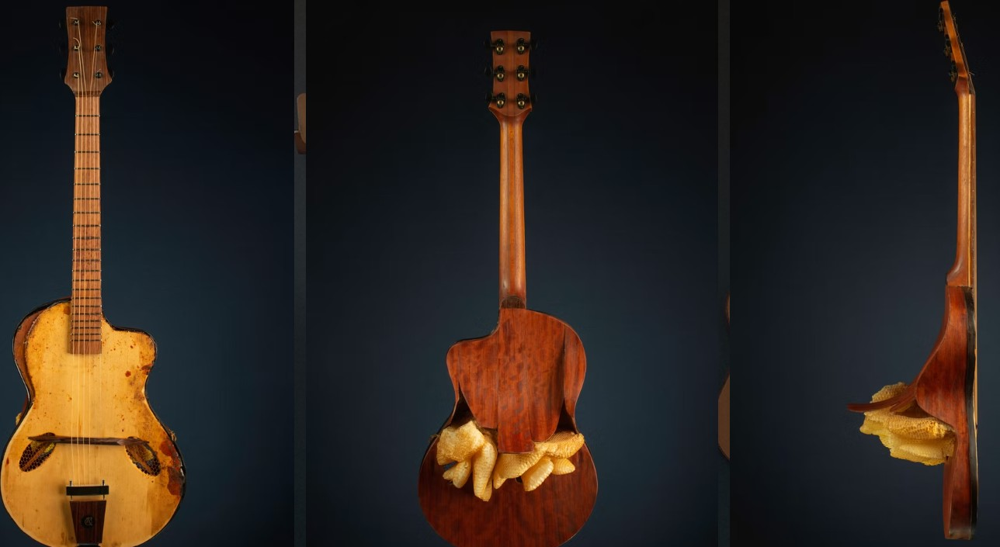
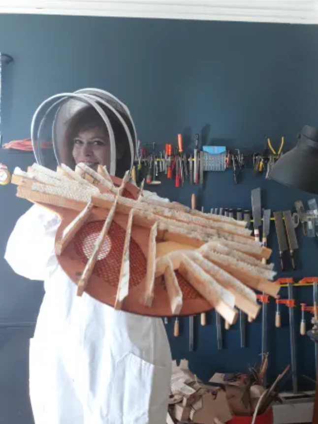
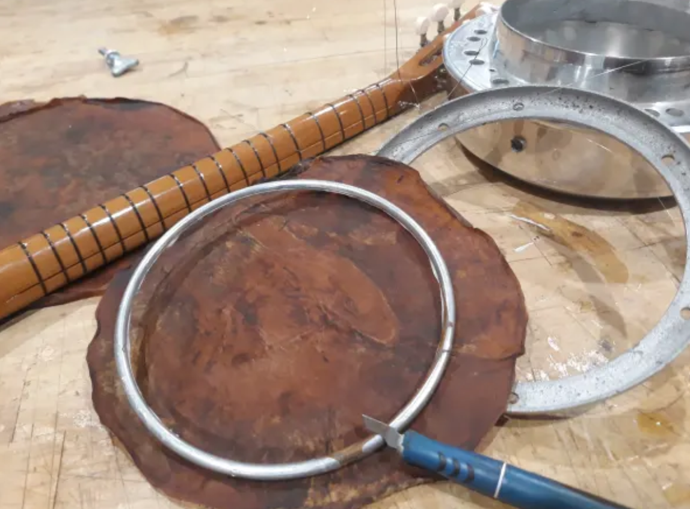
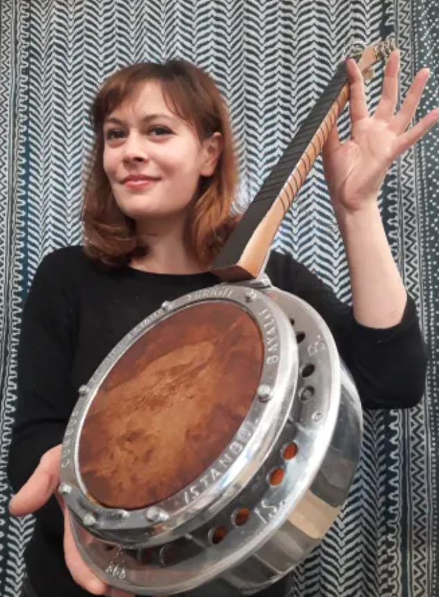
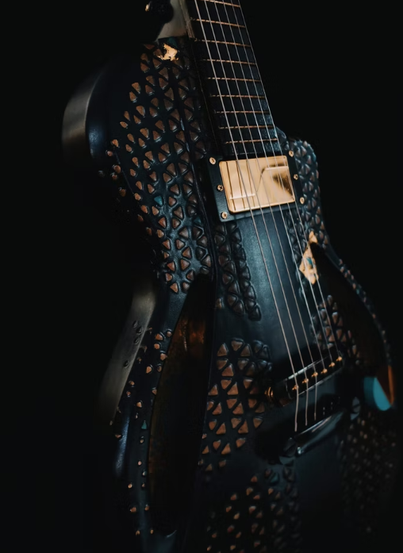
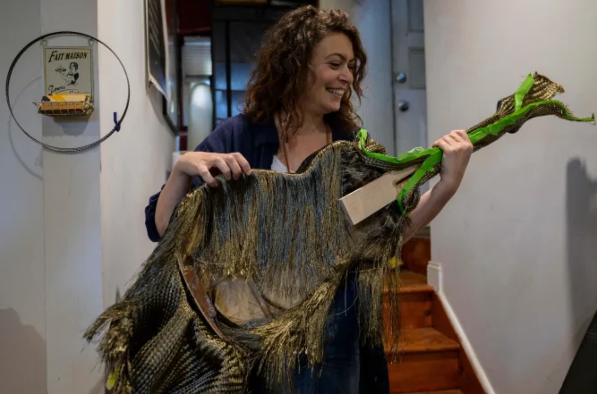
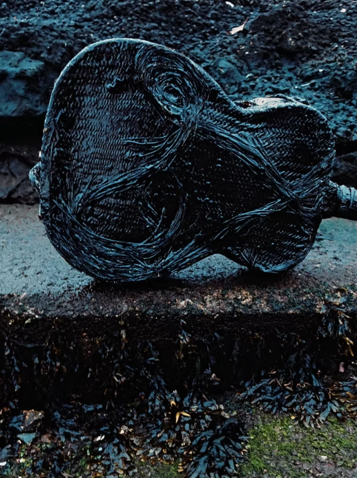
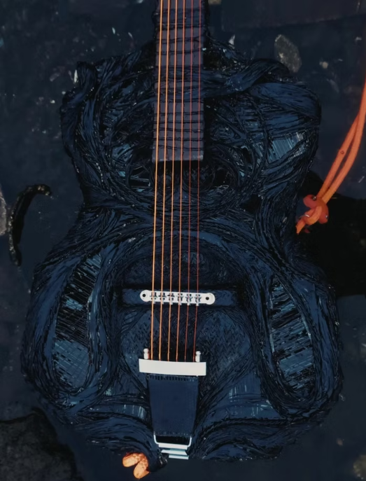

Episode 08
A Guitar in a Month, Not 200 Years
At 21, Rachel Rosenkrantz asked a Paris guitar shop for an apprenticeship and was told she was too old. She spent the next decade in industrial design, including on a lighting innovation team at Philips, until weekend classes at a guitar building school led her to “crossfade” her career. She now runs Atelier Rosenkrantz and teaches in Experimental and Foundation Studies at the Rhode Island School of Design.
We talk about the IKEA box that led to an electric guitar grown from mycelium, a paper sample she kept on a kitchen shelf for years, a kombucha experiment that still needs a chemist, an ambidextrous guitar that came from listening to Elizabeth Cotten, and why instruments made from gourds convinced her she could grow a guitar in a month instead of waiting 200 years for a tree.
From the conversation

It started when Rachel opened an IKEA box and found the corner pieces were mushroom, not polystyrene. Polystyrene carries sound well because it is full of air, so she tested whether its natural counterpart would too, first in an old ukulele mold and then at guitar scale. The core of the body is grown from mycelium and agricultural by-products, and the shell and neck are compressed recycled paper. The only wood is on the sides, made from rosewood scraps left over from an earlier build. The mycelium core can be swapped out or upgraded, and she is now growing a formula with more bass response.


Rachel left this steel-string guitar’s soundboard in a beehive for a whole year so the bees would build on it. Honeycomb diffuses sound naturally, and bees communicate through it with vibrations in a range close to a guitar’s. She calls it a visual poetry experiment and is fine if it does not last, though beehive specimens from the 1970s at RISD’s Nature Lab are still in good condition.


When layers of kombucha are stacked, they fuse, so a banjo head could be grown in shape with its own bracing built in. Her longest test lasted three months before it dried out. Her next idea is lamination, with fiber between the layers for reinforcement and outer layers to slow the drying. She trained in art school, not chemistry, and would welcome help from anyone who wants to try.
More of Rachel’s work

A semi-hollow electric guitar in sipo wood, inlaid with eggshells in lacquer with gold leaf, a technique borrowed from antique French and Asian furniture. Its pickup recharges over USB, so there are no 9-volt batteries to throw away. It was her pandemic project, built from eggshells saved one quarantine omelet at a time.



Top: the basalt fibers
The New Bedford model is built from basalt volcanic rock fibers and an algae-based bioplastic, materials from modern sustainable boat making that also happen to suit sound. It draws on two decades of living by the ocean in New England. The soundhole, shaped like the open mouth of a ray, nods to the viola braguesa, a guitar from the regional heritage of the Portuguese whalers that she came to know through years of repairs. The woven texture recalls seaweed, coiled rope, and a fisherman’s sweater.
Photos courtesy of Atelier Rosenkrantz.
Extra materials
About ten years ago, before she started working with biomaterials, Rachel appeared on Raw Craft with Anthony Bourdain and talked about building guitars that last for generations. In our conversation she explains how that thinking changed: when a material may not last, she designs the part to be replaceable.
Available on